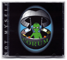
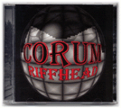

Finally completed, Not Myself is the result of some very
creative songwriting. Though Jim and Jay wrote nearly everything for this CD, David Hillman (former bass player
with the group) co-wrote the music for Heaviest and Proctology, and Dave Rand developed more of the drum parts
than on Riffhead.
Be prepared for some very diverse, often heavy, and definitely strange music on Not Myself.
|

audio–lyrics–credits
|
|
Riffhead is the culmination of over 10 years of songwriting by
Jim and
Jay.
Songs like Flight of Dusk, Trials and Tribulations, Riffhead, and Judgement Rights
were started in the 80’s and evolved over the years as band members came and went.
Late in 1995, they finally agreed to remain a three-piece band with
Dave behind the drums. They refined the
songs playing shows
in Mankato, MN, with bands like Naked Bob, Porcelain Boys, Marble, and Luminol before self-recording the tracks,
preparing the artwork, and releasing the CD in May of 1997.
|

audio–lyrics–credits
|
Listen to MIDI clips created by the members of Corum.
|